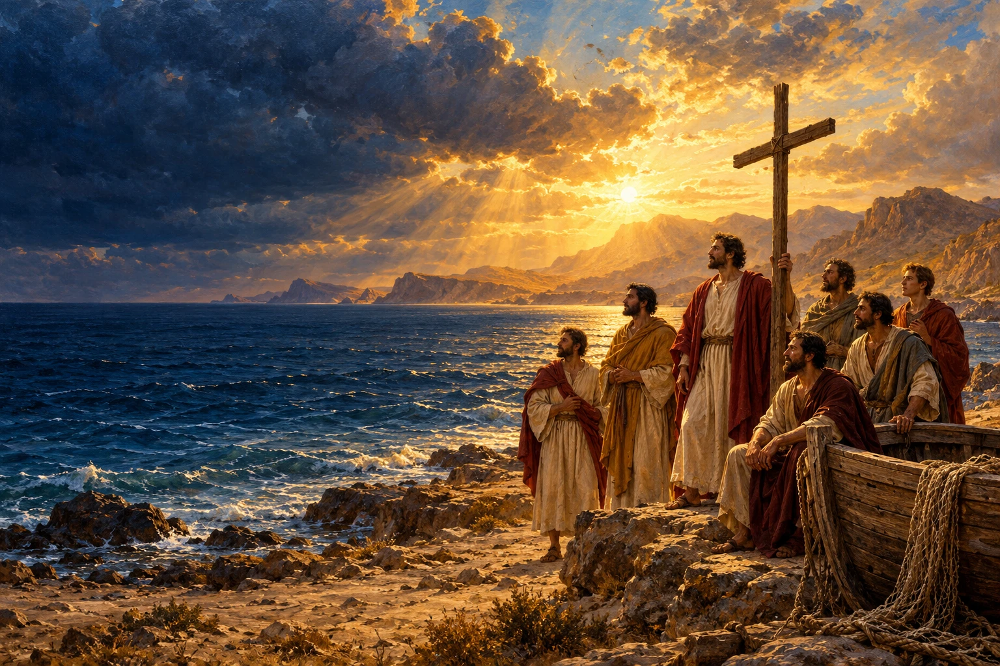
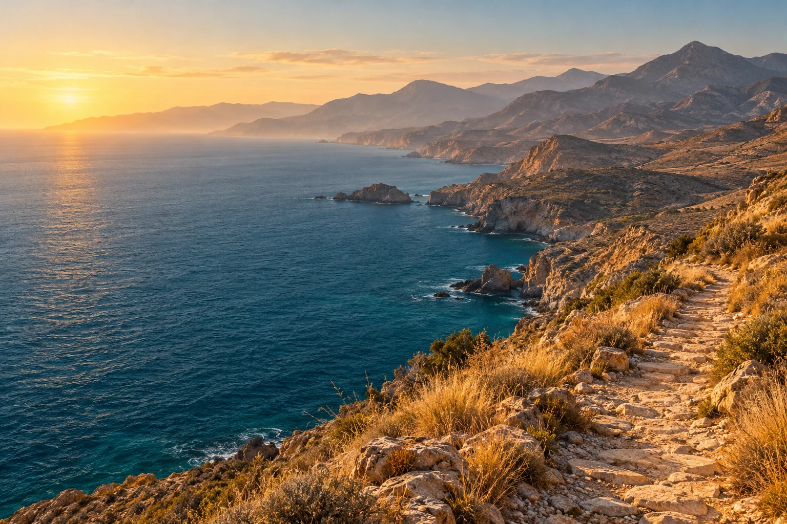
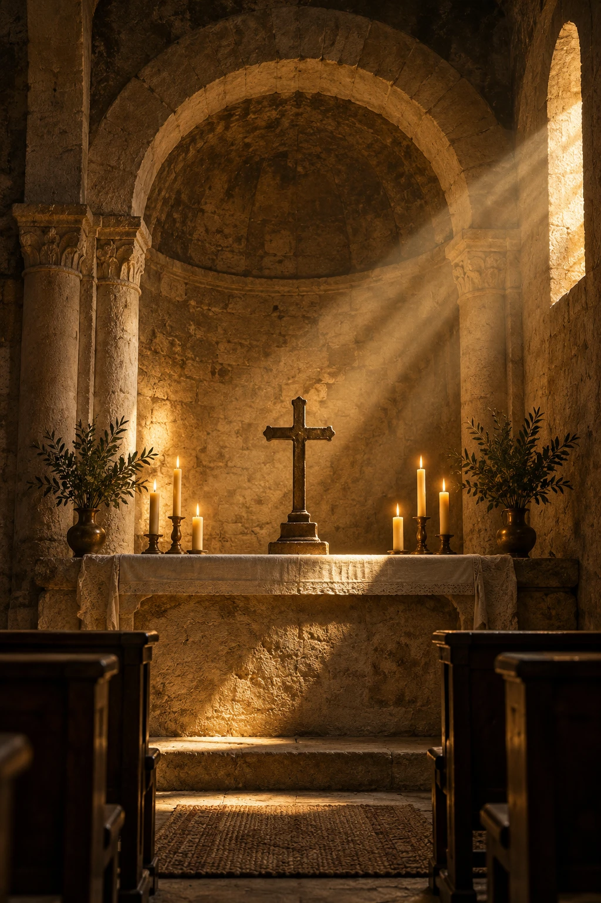

Faith
Time for silence, prayer and an encounter with Christ.

MEDITERRANEAN · SPAIN · SEVEN APOSTOLIC MEN
A harbour of faith. A journey of hope.
Where the sea opens a path back to what matters.
WELCOME TO ALMERÍA, A HARBOUR OF FAITH
Some places invite us to explore. Others invite us to look within. In Almería, the memory of the Seven Apostolic Men inspires a pilgrimage initiative: to walk, to discover and to open our hearts to God.
Time for silence, prayer and an encounter with Christ.
A closer look at the past and the Christian memory of this land.
An invitation to discover the region and share the journey with others.
01 — THE ORIGINS
Seven names. One mission.
A memory that lives on.
Tradition tells of Torquatus, Ctesiphon, Indaletius, Secundus, Euphrasius, Caecilius and Hesychius, sent from Rome to proclaim the Gospel in Hispania.
Passed down through hagiographic sources, this account belongs to the spiritual memory of south-eastern Spain. Today it invites us to discover Almería through the eyes of faith.
Explore the sources ↗
AGUADULCE · TURANIANA
We imagine that first step beside the sea at Aguadulce. The nearby archaeological site of Ribera de la Algaida, or Turaniana, is protected as a Site of Cultural Interest and opens a window onto this coastline’s past.
Archaeology provides context; the arrival of the seven missionaries at this particular place remains a question for research. From this shore, we propose a journey of heritage, hospitality and prayer.
Explore the journey ↓02 — THE JOURNEY
Four perspectives on a land that invites us to walk. Explore the places that inspire the proposal.
Conceptual map, not to scale. Proposed connections, not a waymarked trail or a verified historical itinerary.
AGUADULCE · TURANIANA
A beginning beside the Mediterranean: discover Turaniana’s past and let silence make room for what matters.
What hope will you carry with you?
Itinerary under study. Stages, access and hospitality will be developed with specialists, local communities and the dioceses involved.
THE SEVEN APOSTOLIC MEN
Tradition tells of their dispersal after Acci to proclaim the Gospel. Their names belong to the Christian memory of these lands.
Acci · Guadix
Vergi · Berja
Urci · Pechina area
ALMERÍAAbula · associated with Abla
Iliturgi · Andújar tradition
Iliberri · Elvira / Granada
Carcere · location debated
Traditional identifications; some connections between ancient sees and present-day towns remain disputed.

03 — A LIVING FAITH
According to tradition, the Church of Almería honours Saint Indaletius as its founder. Pechina keeps this devotion alive, with 15 May as its principal reference date.
Almería, puerto de fe seeks to bring heritage, prayer and the hospitality of local communities together. An experience rooted in Christ and in our encounter with one another.
A moment for prayer ↗BE STILL. YOU ARE ON THE WAY.
A pause to entrust to God whatever you carry in your heart.
Lord Jesus,
you call us to reach out to others.
Kindle in us the faith of your witnesses.
May the sea teach us to trust,
the path teach us to listen,
and every person be a brother or sister to welcome.
Through the intercession of Saint Indaletius,
make this land a home of hope
and our steps a response to your love.
Amen.
An original prayer proposed for this initiative.04 — A SHARED HORIZON
An independent initiative at proposal stage, open to the Church’s discernment and to collaboration with parishes, specialists and local institutions.
Review the account with the diocese, historians and archaeologists. Agree on a pastoral approach and a sound documentary foundation.
Study a viable itinerary, accessibility, heritage permissions and the welcome offered by local communities.
Propose a pilot day of prayer and heritage. Listen to participants before developing the initiative further.
ALMERÍA, PUERTO DE FE
A concrete proposal for dialogue with the bishop’s office: vision, foundations, places and next steps.
FAITH AND RIGOUR, ON THE SAME PATH
We respect the account’s spiritual value and distinguish documented evidence from questions that require research. The initiative has no diocesan approval and is not an officially recognised pilgrimage route.
The sources consulted do not establish a landing at Aguadulce or an itinerary through Dalías and La Ragua. The miracles and first-century origins are presented as religious tradition. Roman heritage does not prove the missionaries’ presence. The Indalo is considered as cultural context, without attributing a Christian origin to it or presenting popular etymologies as established facts.
Editorial review: October 2026.